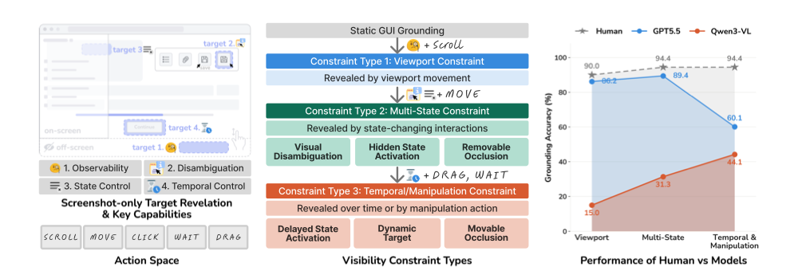
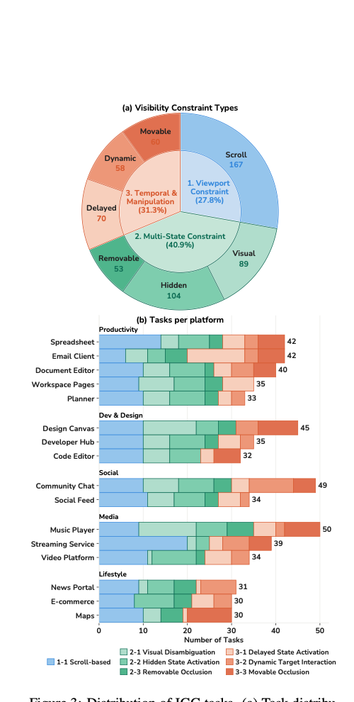
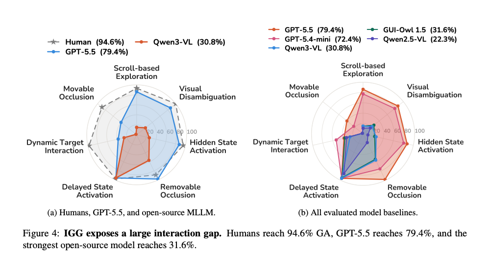

01Viewport Constraint
Reveal by viewport movement
The target is hidden by the current viewport but remains reachable in the same UI state.
- CT1-1Scroll-based Exploration
IGG evaluates whether screenshot-only GUI agents can recover a target's visibility through minimal interaction—and then ground the correct element.
Benchmark at a glance
The missing middle
Static GUI grounding assumes the requested element is already visible. Real interfaces violate that assumption: targets may be off-screen, visually ambiguous, hidden by state, occluded, delayed, or moving.
IGG keeps the goal precise—locate and click one target—while adding only the interaction required to make that target observable. Every click is verified online against the target element in the current UI state.

Controlled interaction
The target is hidden by the current viewport but remains reachable in the same UI state.
The target or the cue needed to identify it appears only after an interface interaction.
The target requires temporal control, tracking a dynamic state, or spatial manipulation.
Dataset
Seven sub-types span off-screen targets, interface state changes, delayed and dynamic content, and movable occlusions. Every task is replayed to verify that its target is unique and reachable.

Main results
Humans solve nearly all tasks, while the strongest open-source baseline reaches only 31.6% GA. Completing the reveal interactions before Qwen3-VL's final click raises its GA from 30.8% to 81.9%.

Citation
Please cite our EMNLP 2026 paper. The proceedings identifier will be added after publication.
@inproceedings{iggbench2026,
author = {Kim, Kyeongseon and Son, Jiyeon and Oh, Tae-Hyun},
title = {IGG: A Benchmark for Interactive GUI Grounding
under Visibility Constraints},
booktitle = {EMNLP},
year = {2026}
}